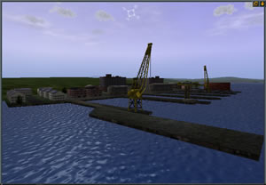

RUSSIAN
REBELLION
Struggling with their newfound
democracy and being steered by elected leadership that can ill
afford new military initiatives, the Russian Navy is all but
forgotten. The crews and officers do their best to maintain
their cherished vessels but without the necessary resources
their conditions steadily deteriorate.
Further, the Russian government
is taking steps that are increasingly authoritarian. In the
Russian Far East, the military responds by staging a mutiny
of massive proportions. The Pacific Fleet in Vladivostok and
Petropavlovsk is seized by the newly formed Russian Rebels.
(click to enlarge)
Moscow responds with the mobilization
of the Northern fleet from Murmansk to put down the rebellion
and to regain control of the heart of their Pacific Fleet forces
and ports. U.S. intelligence gives an ominous warning that ballistic
missile submarines are among the captured assets and cannot
be found in recent satellite imagery.
The U.S. immediately takes the
initiative in this matter of global security and deploys a naval
task force to the Sea of Okhotsk. However, Russian leadership
maintains that the insurgency is an internal matter subject
to Russian sovereignty and warns the U.S. that any direct involvement
in the conflict will be considered an act of aggression. The
U.S. government disregards the warning and directs Navy officials
to proceed through International waters to the eastern shores
of Russia. The full mobilization of the U.S. and Russian navies
in this volatile region provides opportunities for rival countries
to renew hostilities and alter the established balance of power.
The military forces of China,
Japan, India, and Taiwan are put on full alert as they brace
for war. The Russian Rebellion is portrayed by Moscow as a “lawless
act by desperate men resistant to change.” However U.S.
surveillance and reconnaissance soon discovers that this rebellion
is not so easily explained. Foreign merchant ships and naval
vessels are detected moving covertly amongst the Rebels and
pre-planned alliances are indicated. Perhaps the intentions
of the Rebel forces are not as malevolent as they first appeared.
Russian leadership is consistently quiet when questioned by
the U.S. and maintains the threat that U.S. forces will be attacked
if they interfere in what the Russians insist is an internal
conflict.
Meanwhile, Chinese forces are
mobilizing. PLAN officials claim that the PRC is merely defending
itself from the potentially devastating and potent force of
both Russian government forces and rogue military assets controlled
by the Rebels. However, the sudden build-up of substantial Chinese
forces in the Taiwan Strait intimidates the Taiwanese and they
initiate defensive war plans. The eastern world is on the brink
of war, and the outcome is perilously uncertain…
(click
to enlarge)
In S.C.S. – Dangerous Waters
you have the choice to participate in the campaign from multiple
perspectives. You can control forces from the U.S., the Russian
Loyalists, the Russian Rebels or the Chinese side, depending
on the mission tasking and objectives. Your decisions have an
impact not only on the direction of the conflict but may also
dictate the alliances between countries. Those alliances will
remain persistent for multiple missions or the entire campaign.
However, in many instances the pre-existing alliances will be
decided dynamically from the start of the campaign, and you
must unravel the story behind the Russian conflict and determine
the true intentions of each side. Make the wrong decision and
the enemy forces you chose to destroy earlier in the campaign
will no longer be available to defend you once the true alliances
are revealed.
FIRST MISSION: “PETROPAVLOVSK”
688(I) TASKING – Indication and Warning: Rebel Threat
Assessment
[Mission Bias: Neutral]
From: Commander Submarine Group Seven
To: Commander USS Topeka (SSN 754)
Info: Commander US Pacific Command
Commander US Pacific Fleet
Commander US Seventh Fleet
Subj: Operation Order 1-06
1.
Background.
A. For months, the Russian
government has been increasingly repressive and anti-democratic.
The recent elections were marked by both intimidation of independent
parties and apparent electoral fraud. The incumbent party won
by a 99.8% landslide, but voter turnout was weak, especially
in the outlying provinces. The far eastern provinces have seen
especially strident protest, which has recently threatened to
turn violent. Following a bloodless coup, the Russian far eastern
provinces have seceded from Russia, and are under the control
of a cabal of rebellious military officers. There has been no
official communications from the rebels, and their identity
and intentions are unknown. The Russian government in Moscow
has issued a terse announcement of the coup, and stated that
it does not accept the secession. Other governments, including
the United States, have taken a wait-and-see position and expected
clarification of the rebel political intentions.
(click to enlarge)
B.
Russian intelligence had provided an early warning of potential
trouble in the Far East, and the government responded by sending
submarines from the Northern Fleet under the ice to the Pacific.
Surface ships and SSBNs commanded by local captains sortied
from Petropavlosk and Vladivostok in an apparent attempt to
avoid losing control of the entire pacific fleet.
C. The rebels are assumed
to be in control of the remaining ships, which may include SSBN
submarines that were being repaired and were unable to get underway.
No warships have been observed leaving either port since the
coup. In addition to the intentions of the rebels, there is
concern that they might attempt to sell Russian military hardware.
Possibly including nuclear and biochemical weapons and technology,
in an attempt to gain assistance and secure funding.
2.
Mission.
A. Penetrate as possible the
Avachinskaya inlet and conduct intelligence gathering, surveillance
and reconnaissance. Objective is to identify and report the
surface seagoing order of battle within Rybachiy submarine base
and Kamchatka shipyard.

(click to enlarge)
B. Monitor all ship traffic
into and out of Acachinskaya inlet. Objectives are to (1) identify
all warships including submarines actually operating from this
port. You are to detect and visually classify all surface assets
at the harbor entrance in order to achieve this objective. (2)
Identify foreign merchant shipping that might indicate cooperation
from other countries with the rebels.
3.
Execution.
A. Rules of engagement. You
are authorized to release weapons only if (1) you have been
shot at (hostile action) or (2) you have unambiguous indications
they are preparing to shoot at you (hostile intent).
B. You must not be identified
inside foreign territorial waters. Take any action necessary
to safeguard your identity under these circumstances. Russian
forces are likely conducting intelligence operations against
the rebels, but the possibility of attempts by other nations
cannot be excluded. Remain covert at all times (critical).

4.
Command and Control.
A. Copy the submarine broadcast
at least every 2 hours.
B. All reports to COMSUBGRUSEVEN.
P-3 TASKING
– Surface Monitoring and Communications Intercept
[Mission Bias: Neutral}
FROM: Commander US Seventh Fleet
TO: Commander Patrol Reconnaissance Wing 1 Detachment
INFO: Commander US Pacific Command
Commander US Pacific Fleet
SUBJ: Operation Order 1-06
1.
Background
A. For months, the Russian
government has been increasingly repressive and anti-democratic.
The recent elections were marked by both intimidation of independent
parties and apparent electoral fraud. The incumbent party won
by a 99.8% landslide, but voter turnout was weak, especially
in the outlying provinces. The far eastern provinces have seen
especially strident protest, which has recently threatened to
turn violent. Following a bloodless coup, the Russian far eastern
provinces have seceded from Russia, and are under the control
of a cabal of rebellious military officers. There has been no
official communications from the rebels, and their identity
and intentions are unknown. The Russian government in Moscow
has issued a terse announcement of the coup, and stated that
it does not accept the secession. Other governments, including
the United States, have taken a wait-and-see position and expected
clarification of the rebel political intentions.
(click to enlarge)
B.
Russian intelligence had provided an early warning of potential
trouble in the Far East, and the government responded by sending
submarines from the Northern Fleet under the ice to the Pacific.
Surface ships and SSBNs commanded by local captains sortied
from Petropavlosk and Vladivostok in an apparent attempt to
avoid losing control of the entire pacific fleet.
C. The rebels are assumed
to be in control of the remaining ships, which may include SSBN
submarines that were being repaired and were unable to get underway.
No warships have been observed leaving either port since the
coup. In addition to the intentions of the rebels, there is
concern that they might attempt to sell Russian military hardware.
Possibly including nuclear and biochemical weapons and technology,
in an attempt to gain assistance and secure funding.
5.
Mission.
A. Monitor, identify and report
all ship traffic including submarines into and out of Avachinskaya
inlet. Objectives are to (1) identify all warships actually
operating from naval bases within the inlet. You are to detect
and visually mark all surface assets at the harbor entrance
in order to achieve this objective. (2) Perform reconnaissance
on Rybachiy submarine base and Kamchatka shipyard. Utilize the
infrared camera to photograph both sides from a safe altitude.
(3) Identify any foreign merchant shipping that might indicate
cooperation from other countries with the rebels.
(click to enlarge)
6.
Execution.
A. Rules of engagement. You
are authorized to release weapons only if (1) you have been
shot at (hostile action) or (2) you have unambiguous indications
they are preparing to shoot at you (hostile intent).
B. Stay in international airspace
(outside twelve miles from land.)
7.
Command and Control.
A. All reports to Commander
Seventh Fleet.
B. Maintain continuous communications.
AKULA TASKING – Threat Assessment
and Spec Ops Insertion
[Mission Bias: Pro-Loyalist]
FROM Commander Northern Fleet
TO: K-335 (Gepard)
SUBJ: Petropavlovsk Operations
1.
Background.
A. Traitorous rebels have
seized a large part of our pacific fleet in Vladivostok and
Petropavlovsk. Moscow has mobilized the northern fleet from
Murmansk to subdue the rebellion and to regain control of the
heart of our pacific fleet forces and ports. The treasonous
acts of our former comrades are shameful and will not go unpunished.
As they have cooked this porridge, now they must sleep in it.
We, the only loyal Russians, must take back what is ours and
secure the ports of Petropavlovsk and Vladivostok. Failure to
do so may mean the end of our beloved nation as we know it.
(click
to enlarge)
B.
The Americans have expressed concern over the situation but
have agreed to remain in international waters while we secure
our naval ports.
C. Intelligence indicates
that the Chinese are in the area.
2.
Mission.
A. Penetrate the Avachinskaya
inlet and deploy your onboard Special Forces near Rybachiy submarine
base without being detected (critical). These operatives will
insert themselves aboard rebel vessels and will prove invaluable
to us in the coming weeks.
(click to enlarge)
B.
Return to vicinity of inlet entrance and identify all warship
traffic operating in Avachinskaya inlet. Objective is to identify
and report the order of battle controlled by rebels. You are
to detect and visually classify all surface assets at the harbor
entrance in order to achieve this objective.
C. Prohibit any Russian warships
from exiting Petropavlovsk. You can assume the rebels command
all Russian warships inside Avachinskaya inlet. Objective is
to prevent any rebel-commanded warships from reaching the open
ocean but to preserve as many as possible for our own continued
use once we defeat the rebels. By heavily damaging one vessel
the others may refrain from continuing their egress.
3.
Execution.
A. Rules of engagement
(1) You are authorized to engage Russian warships only if they
attempt to leave the Avachinskaya inlet. (2) Avoid engaging
the Chinese. A tenuous favorable alignment with China still
holds and their intentions are unknown. We want to keep the
Chinese as a “friend” at this juncture. (3) You
are authorized to engage any other warships only if they have
shot at you first.
4.
Command and Control.
A. Copy the submarine broadcast
at least every 2 hours.
B. All reports to Commander
Northern Fleet.